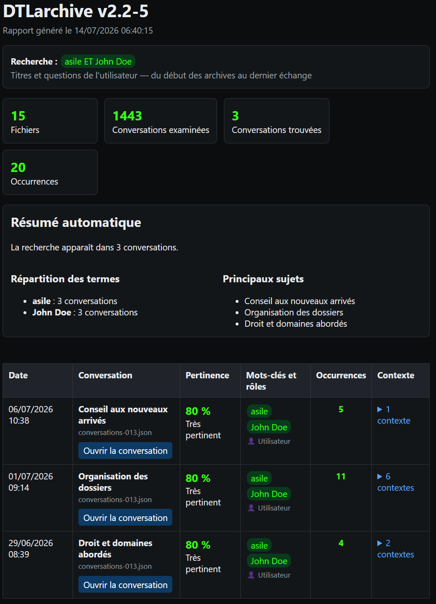

DTLarchive — Guide utilisateur v2.2-17
Le quoi, le pourquoi et le comment de chaque fonctionnalité.
Read this guide in EnglishPremiers pas
À quoi sert DTLarchive ?
DTLarchive recherche et rassemble les connaissances présentes dans vos archives de conversations ChatGPT. Il transforme les fichiers JSON de l'export en un index local, puis produit un rapport lisible qui conserve le contexte des correspondances.
Public : tous publics
Préparer les archives
Quoi ?
DTLarchive lit les fichiers nommés conversations*.json provenant d'un export ChatGPT.
Pourquoi ?
Ces fichiers contiennent les titres, dates, questions et réponses nécessaires à la recherche.
Comment ?
Décompressez l'export ChatGPT dans un dossier facile à retrouver. Ne modifiez pas les fichiers JSON avant leur sélection.
Parcours rapide avec l'exécutable
- Double-cliquez sur
DTLarchive.exe. - Appuyez sur Entrée pour continuer en français. Pour passer en anglais, saisissez
1: l'écran d'accueil complet est alors réaffiché en anglais. - Dans l'Explorateur de fichiers, sélectionnez un ou plusieurs fichiers
conversations*.json, puis validez. - Lisez la période disponible. Saisissez éventuellement une date de début et une date de fin au format
jj/mm/aaaa, ou laissez les champs vides. - Saisissez votre recherche, puis choisissez
1,2ou3pour déterminer les parties des conversations à examiner. - Si des conversations sont trouvées, appuyez sur une touche : le rapport s'ouvre dans votre navigateur par défaut. Si aucun résultat n'est trouvé, aucun rapport n'est ouvert.
- Le menu de recherche réapparaît directement dans la console. Les archives sélectionnées restent actives.
Fonctionnalités principales
Choisir la langue et demander de l'aide
Quoi ?
L'interface complète existe en français et en anglais. Une aide contextuelle est disponible à chaque question interactive.
Pourquoi ?
La langue choisie s'applique aux questions, erreurs, fenêtres, rapports, pages de conversation et journaux.
Comment ?
À la première question, saisissez 1 pour l'anglais ou appuyez sur Entrée pour le français. Saisissez ?, aide, help ou h pour obtenir l'explication de la question affichée.
Après une demande d'aide, DTLarchive affiche l'explication puis répète la même question. Un changement de langue réaffiche tout l'écran d'accueil dans la langue choisie sans sauter d'étape.
Sélectionner les archives et alimenter l'index
Quoi ?
Vous pouvez réunir plusieurs fichiers d'archives dans une seule recherche. DTLarchive les inscrit dans un index SQLite persistant.
Pourquoi ?
L'index accélère les recherches suivantes et évite de relire les fichiers inchangés. Une conversation dupliquée dans plusieurs exports n'est conservée qu'une fois.
Comment ?
Dans la fenêtre de sélection, maintenez Ctrl pour choisir plusieurs fichiers séparés, ou Maj pour une plage continue, puis cliquez sur Ouvrir.
Pendant la mise à jour, le nom du fichier traité apparaît. Le message final distingue les fichiers analysés des conversations importées. Si aucune conversation exploitable n'est trouvée, DTLarchive ne demande pas de période et revient à la sélection des fichiers. Gardez l'index DTLarchive-index.sqlite à côté de l'application si vous souhaitez bénéficier de sa réutilisation.
Limiter la recherche à une période
Quoi ?
Le filtre de période retient seulement les conversations datées entre deux limites inclusives.
Pourquoi ?
Il réduit le nombre de résultats lorsque les mêmes termes apparaissent sur plusieurs années.
Comment ?
Saisissez les dates au format jj/mm/aaaa. Laissez la date de début vide pour partir du début des archives, la date de fin vide pour aller jusqu'au dernier échange, ou les deux vides pour tout rechercher. Saisissez Q à l'une des invites pour quitter la session.
DTLarchive affiche d'abord la période réellement disponible. Si la fin précède le début ou si la période ne recoupe aucune archive, il explique l'erreur et redemande les dates. Une période partiellement couverte reste valable.
Formuler une recherche
Quoi ?
La recherche accepte un mot, une expression, des alternatives, des termes obligatoires, une exclusion ou un début de mot.
Pourquoi ?
La syntaxe permet d'élargir ou de préciser les résultats sans service d'IA ni interprétation sémantique.
Comment ?
Saisissez les mots tels qu'ils peuvent apparaître dans les conversations. Combinez-les avec ET, OU, une virgule, - ou *. Saisissez Q seul pour quitter la session.
| Besoin | Saisie | Effet |
|---|---|---|
| Un mot | retraite | Trouve les conversations contenant ce mot. |
| Une expression | carte blanche | Recherche l'expression complète dans le même ordre. |
| Des alternatives | mutuelle, assurance | Trouve l'un ou l'autre terme. OU et le point-virgule ont le même rôle. |
| Des termes obligatoires | asile ET John Doe | Exige les deux termes dans la même conversation. |
| Deux groupes | asile ET John Doe, retraite | Recherche soit le premier groupe complet, soit retraite. |
| Une exclusion | sauvegarde, -réseau | Écarte toute conversation contenant réseau. |
| Un début de mot | imprim* | Trouve notamment imprimer, imprimante et impression. |
ET/OU et anglais AND/OR sont acceptés dans les deux interfaces.Choisir le périmètre de recherche
Quoi ?
Le périmètre détermine si DTLarchive examine vos questions, les réponses de ChatGPT ou les deux. Les titres sont toujours examinés.
Pourquoi ?
Rechercher seulement vos questions retrouve vos intentions ; rechercher les réponses retrouve plutôt les informations formulées par ChatGPT.
Comment ?
Saisissez 1 pour les titres et vos questions, 2 pour les titres et les réponses, ou 3 pour l'ensemble. Appuyer sur Entrée choisit 1.
Lire le rapport et retrouver le contexte
Quoi ?
Le rapport HTML classe les conversations trouvées et montre les termes, les rôles, les occurrences et des extraits de contexte.
Pourquoi ?
Vous pouvez évaluer rapidement la pertinence d'un résultat avant d'ouvrir la conversation complète.
Comment ?
Commencez par le résumé et les statistiques. Dans le tableau, cliquez sur le nombre de contextes pour déplier les extraits, puis sur Ouvrir la conversation pour accéder au premier message correspondant.

Le score privilégie les correspondances dans le titre, puis dans vos questions et enfin dans les réponses de ChatGPT. Il augmente également avec le nombre d'occurrences et de termes distincts. Les « principaux titres » sont des titres de conversations trouvées, pas une analyse thématique par intelligence artificielle.
Réutiliser les résultats structurés
Public : utilisateur expérimenté
Quoi ?
mining_results.json contient les paramètres, statistiques, conversations, scores, termes et contextes du traitement.
Pourquoi ?
Cette sortie sert de première étape à des outils d'extraction, de comparaison ou d'enrichissement de bases de connaissances.
Comment ?
Récupérez le fichier dans DTLarchive-output et importez-le dans un programme acceptant le JSON. Utilisez les métadonnées pour conserver la source, la période et le périmètre de la recherche.
Utilisation avancée
Gérer et reconstruire l'index SQLite
Public : utilisateur expérimenté
Quoi ?
L'index par défaut est DTLarchive-index.sqlite. Il mémorise les archives déjà traitées et rend les recherches suivantes plus rapides.
Pourquoi ?
Une reconstruction peut être utile après le déplacement de nombreuses archives, une incompatibilité signalée ou un doute sur le contenu indexé.
Comment ?
Fermez DTLarchive, puis relancez-le en ligne de commande avec --reindex. Pour conserver l'ancien index, indiquez un nouveau chemin avec --index.
DTLarchive.exe D:\Archives\ChatGPT --mots-cles "retraite" --reindex
La reconstruction efface le contenu de l'index sélectionné puis réimporte les archives fournies. Elle ne supprime pas vos fichiers d'export ChatGPT.
Automatiser une recherche en ligne de commande
Public : utilisateur expérimenté
Quoi ?
La ligne de commande fournit les mêmes fonctions sans questions interactives.
Pourquoi ?
Elle permet de répéter une recherche, de choisir précisément les dossiers de sortie et d'intégrer DTLarchive à un traitement automatisé.
Comment ?
Ouvrez PowerShell dans le dossier de DTLarchive, saisissez l'exécutable ou le script, les archives, puis les options. Entourez de guillemets les chemins ou recherches contenant des espaces.
.\DTLarchive.exe "D:\Archives\ChatGPT" ` --mots-cles "asile ET John Doe, OFPRA" ` --date-debut 01/01/2024 ` --date-fin 31/12/2025 ` --role user ` --lang fr
| Option | Comment l'utiliser |
|---|---|
| fichiers ou dossiers | Placez un ou plusieurs chemins juste après le nom du programme. Dans un dossier, le motif par défaut est conversations*.json. |
| --mots-cles | Ajoutez la recherche entre guillemets. |
| --date-debut / --date-fin | Indiquez des dates inclusives au format jj/mm/aaaa. |
| --role | Choisissez user, assistant ou both. |
| --output | Indiquez le dossier dans lequel créer le rapport, les pages et le JSON. |
| --pattern | Indiquez un autre motif de fichiers, par exemple conversations-2025*.json. |
| --index | Indiquez le chemin d'un autre fichier SQLite. |
| --reindex | Ajoutez cette option seule pour reconstruire complètement l'index choisi. |
| --quiet | Ajoutez cette option seule pour masquer le résumé dans la console. |
| --lang | Utilisez fr ou en. |
| --help / --version | Affichez respectivement l'aide des options ou la version, puis quittez. |
En ligne de commande, une date invalide, une période inversée, une période sans recoupement ou l'absence d'archive provoque un arrêt avec le code 2.
Consulter le journal de diagnostic
Quoi ?
Chaque lancement complète un journal HTML quotidien dans le dossier logs.
Pourquoi ?
Le journal aide à comprendre une archive refusée, une erreur d'index, des paramètres incorrects ou un arrêt inattendu.
Comment ?
Ouvrez logs\DTLarchive_AAAAMMJJ.html dans votre navigateur. Repérez l'heure du lancement concerné, puis lisez les lignes marquées ERREUR ou AVERTISSEMENT.
Si vous demandez de l'assistance, indiquez la version de DTLarchive et recopiez uniquement les lignes utiles. Vérifiez auparavant qu'elles ne contiennent pas de chemin ou d'information que vous ne souhaitez pas communiquer.
Aide et sécurité
Résoudre les difficultés courantes
| Constat | Comment réagir |
|---|---|
| Aucune archive sélectionnée | Relancez DTLarchive et choisissez au moins un fichier conversations*.json décompressé. |
| Date invalide | Utilisez exactement le format jj/mm/aaaa, par exemple 01/06/2026. |
| Aucune conversation dans la période | Comparez vos dates à la période disponible affichée, puis élargissez ou videz une limite. |
| Aucun résultat | Vérifiez l'orthographe, retirez une exclusion, remplacez ET par une virgule ou choisissez le périmètre 3. |
| Résultats trop nombreux | Ajoutez un terme avec ET, une exclusion avec -mot ou une période plus courte. |
| Index incompatible ou illisible | Fermez l'application et reconstruisez l'index avec --reindex. Consultez le journal si l'erreur persiste. |
| Le rapport ne s'ouvre pas | Ouvrez manuellement DTLarchive-output\DTLarchive-report.html dans votre navigateur. |
Protéger la confidentialité
- Conservez les exports, l'index SQLite, les rapports, les pages de conversation, le JSON et les journaux dans un emplacement protégé.
- Ne publiez pas un rapport sans relire les extraits qu'il contient.
- Supprimez le dossier de sortie lorsqu'il n'est plus utile, indépendamment des archives d'origine.
- DTLarchive n'envoie ni archives ni recherches en ligne ; l'ouverture du rapport utilise seulement votre navigateur local.
Glossaire rapide
| Terme | Signification |
|---|---|
| Archive JSON | Fichier structuré de l'export ChatGPT contenant les conversations. |
| Index SQLite | Base locale utilisée pour mémoriser et rechercher rapidement le contenu des archives. |
| Périmètre | Parties examinées : titres, questions, réponses ou combinaison de ces éléments. |
| Occurrence | Présence d'un terme recherché dans une conversation. |
| Contexte | Correspondance accompagnée de messages proches pour en comprendre le sens. |
| JSON de résultats | Version structurée et réutilisable des résultats du traitement. |